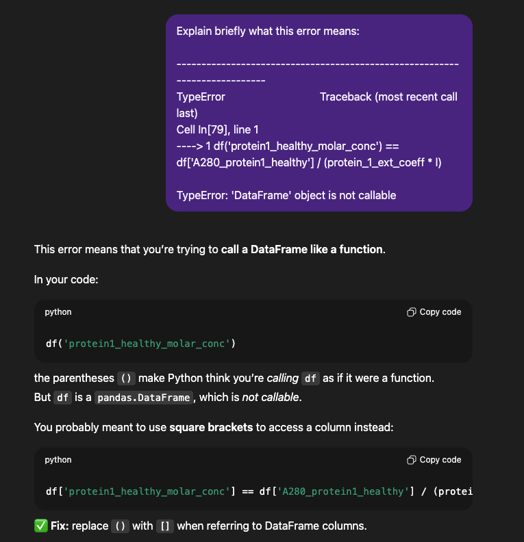

- 1
-
Først sættes variablen
Alig med værdien1. - 2
-
Derefter defineres
Bsom enstrmed en noget tekst.
Python Lyn Kursus
Fysisk Biokemi & Dataanalyse
Mads-Peter V. Christiansen
2025-11-06
Syntax
Python kode er læst oppe fra og ned
Syntax
Den her kode virker
Da vi først definere A = 1 og B = 2 og derefter bruger dem.
Syntax
Så hvad sker der hvis vi prøver noget hvor rækkefølgen er forkert?
--------------------------------------------------------------------------- NameError Traceback (most recent call last) Cell In[206], line 2 1 A = 1 ----> 2 C = A + B 3 B = 2 4 print(f"{C = }") NameError: name 'B' is not defined
Det giver en fejl! Dette er selvfølgelig frusterende, men det kan vendes om til at være meget hjælpsomt.
Alle får disse fejl - uanset erfaring - jeg får mange fejl!
Ikke noget galt i at få fejl - brug det til at finde ud af hvad der går galt.
Data typer & Variable
Python har forskellige typer af data
Forskellige typer kan forskellige ting
Python forstår at vi kan lægge tal sammen, selvom de er forskellige typer.
Flere typer: DataFrame
En DataFrame er en type der kan tænkes på som en tabel eller et excel ark. Her er en DataFrame med to kolonner og 5 rækker.
Flere typer: DataFrame
Vi kan lave forskellige operationer med kolonner
0 3
1 6
..
3 20
4 30
Length: 5, dtype: int64\[ \begin{equation} \begin{pmatrix} 1 \\ 2 \\ 3 \\ 4 \\ 5 \end{pmatrix} + \begin{pmatrix} 2 \\ 4 \\ 9 \\ 16 \\ 25 \end{pmatrix} = \begin{pmatrix} 1 + 2 \\ 2 + 4 \\ 3 + 9 \\ 4 + 16 \\ 5 + 25 \end{pmatrix} = \begin{pmatrix} 3\\ 6 \\ 12 \\ 20 \\ 30 \end{pmatrix} \end{equation} \]
Dette er en “elementwise”-operation.
Flere typer: DataFrame
Kan også gange dem sammen.
0 3
1 6
..
3 20
4 30
Length: 5, dtype: int64\[ \begin{equation} \begin{pmatrix} 1 \\ 2 \\ 3 \\ 4 \\ 5 \end{pmatrix} + \begin{pmatrix} 2 \\ 4 \\ 9 \\ 16 \\ 25 \end{pmatrix} = \begin{pmatrix} 1 \cdot 2 \\ 2 \cdot 4 \\ 3 \cdot 9 \\ 4 \cdot 16 \\ 5 \cdot 25 \end{pmatrix} = \begin{pmatrix} 2\\ 8 \\ 27 \\ 64 \\ 125 \end{pmatrix} \end{equation} \]
Parenteser
Python bruger parenteser til forskellige ting.
- Runde parenteser
(...)bruges i udregniner som almindeligt. - Firkant parenteser
[...]bruges til indeksering - Runde parenteser bruges også til funktions-kald
print('Noget tekst')
Parenteser: Beregning
Hvis vi vil regne dette udtryk
\[
\frac{A + B + C}{2 \cdot C}
\] Skal vi bruge de runde (...) parenteser.
Parenteser: Beregning - Fortsat
Altid en god ide at teste med simple værdier
\[ \frac{A + B + C}{2 \cdot C} = \frac{1 + 1 + 1}{2 \cdot 1} = \frac{3}{2} = 1.5 \]
Parenteser: Indeksering
En anden type brug af paranteser er indeksering.
Indeksering handler om at trække det pågældende element ud af et “data-objekt”.
Tænk: Slå op ved indeks 200 Her er “data-objektet” kartotekket.

Parenteser: Indeksering
En anden type brug af paranteser er indeksering.
Vi kan indeksere (eller “slå op i”) en DataFrame - f.eks. hvis vi gerne vil have Kolonne 2.
Parenteser: Indeksering
En anden type brug af paranteser er indeksering.
Vi kan også indeksere yderligere og tage et specifikt element.
Parenteser: Funktioner
Parenteser bruges ydermere til at give inputs/argumenter til funktioner
Jeg har et par gange f.eks. brugt funktionen print.
Forskellige funktioenr tager forskellige argumenter
Print funktionen sætter alle givne argumenter sammen og printer en samlet tekst.
Parenteser: Funktioner
Vi kan lave en funktion der tager et argument
Lad os forsøge at bruge den
Parenteser: Funktioner
Lad os prøve det samme med en funktion der tager 2 argumenter
Hvis vi kun giver denne funktion et argument får vi en fejl
Opsummering om paretenser
In practice: Step 1
Fra TØ opgaven: Proteins in blood plasma
Kig på datasættet og tænk over hvad det indeholder!
In practice: Step 2
Fra TØ opgaven: Proteins in blood plasma
Tænk over hvad opgaven spørg efter, og hvad der er oplyst.
(b) Calculate concentrations
Calculate the molar concentration of the two proteins in all samples, the light path for every measurement is 0.1 cm.
Always a good idea to assign known values to variables
…
In practice: Step 2
Fra TØ opgaven: Proteins in blood plasma
Tænk over hvad opgaven spørg efter, og hvad der er oplyst.
(b) Calculate concentrations
Calculate the molar concentration of the two proteins in all samples, the light path for every measurement is 0.1 cm.
Always a good idea to assign known values to variables
…
In practice: Step 3
Løs det biokemiske problem
Kender absorbans \(A\), lys vej længde \(l\), extinctions coefficenter \(\epsilon\). Vil gerne regne molar concentrationen \(c\). Hvilken ligningen kunne gøre det?
Beer-Lamberts lov \[ A = \epsilon \cdot l \cdot c \]
Isoler den relevante størrelse
\[ A = \epsilon \cdot l \cdot c \rightarrow c = \frac{A}{\epsilon \cdot l} \]
In practice: Step 4
Nu skal vi så skrive koden for at gøre dette.
Det givne kode var
Tænk over hvad der svarer til hvad imellem ligning og kode
\(A \rightarrow\) df['A280_protein1_healthy']
\(\epsilon \rightarrow\) protein_1_ext_coeff
\(l \rightarrow\) l
Så
\[ c = \frac{A}{\epsilon \cdot l} \]
Bliver til
In practice: Step 5
Tænk over om resultatet giver mening
Vi har regnet
4.791141975308642e-06Med
Mentalitet
Tænk på det som at i er en mekaniker lærling der er givet en motor.
Med den vigtige forskelle er at i kan ikke ødelægge noget.

Mentalitet
Opgaven fra før, men med en fejl
Cell In[241], line 1 df('protein1_healthy_molar_conc') = df['A280_protein1_healthy'] / (protein_1_ext_coeff * l) ^ SyntaxError: cannot assign to function call here. Maybe you meant '==' instead of '='?
Okay, det giver en fejl - prøver at gøre som fejlen siger
--------------------------------------------------------------------------- TypeError Traceback (most recent call last) Cell In[242], line 1 ----> 1 df('protein1_healthy_molar_conc') == df['A280_protein1_healthy'] / (protein_1_ext_coeff * l) TypeError: 'DataFrame' object is not callable
Så, det giver en anden fejl. Den fejl er lidt sværere at forstå hvad betyder…
Mentalitet
Før havde det nu været tid til at Google’ og forhåbenligt få et svar fra stackoverflow. Men det er nemmere nu om dage.

Mentalitet
Okay, skal bruge firkant parenteser
Helpdesk
Kom til Python Helpdesk
Tirsdage: 10.00-12.00
Lokation: Kælderen
Person: Mig (Mads-Peter)
…
…
…
…
9/10 tandlæger siger jeg er flink og 10/10 siger jeg har dårlig humor.
Fysisk Biokemi & Datanalayse - 6/11/2025